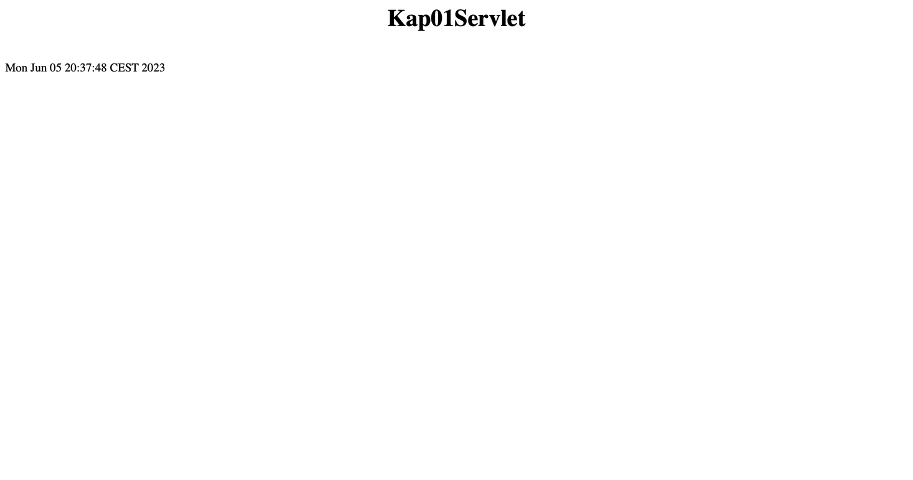
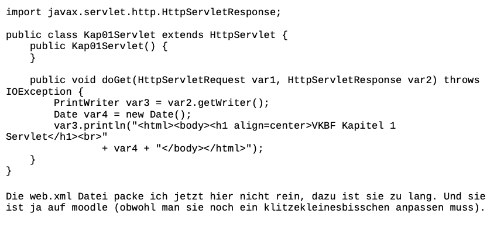

Die fünfte Vorlesung
Tomcat Server
Da wir uns mit Java Servlets beschäftigt haben, haben wir Tomcat implementiert. Tomcat ist ein Webserver/Servlet Container, damit können wir in einer Webserverumgebung Java Code ausführen. Als „Übung“ oder How-to haben wir dann gemeinsam in einer Session Tomcat installiert/laufen lassen, wie das geht, habe ich durch die folgenden Tutorials gesehen:
Tomcat Tutorial
YouTube Tomcat Tutorial
Die Get- und Post-Methode
Die Kommunikation zwischen Server und Clientseitig
Wie funktionierte das nochmal: Der Client sendet eine HTTP-Anfrage (mit einer HTTP-Methode) und bekommt eine HTTP-Antwort. Die Methoden, die man dafür am meisten nutzt sind Get und Post!
Dabei ist die Get-Methode „nur“ ein Aufruf (sowie das Zurücksenden einer Datenressource) und die Post-Methode sendet dazu noch Benutzerdaten und man kann Formulardaten an den Server senden.
Wann benutze ich Get und wann Post? Eigentlich Simpel:
Man nutzt die Get-Methode immer, außer man will einen längeren Text im Suchfeld eingeben, sensible Daten wie Passwörter senden oder kein Lesezeichen für das Formular anlegen.
Apache
Apache ist ein Open-Source Webserver (ein sehr bekannter dazu). Der Apache HTTP Server ist ein leistungsstarker Webserver, der auf verschiedenen Betriebssystemen wie Linux, Windows, macOS und anderen läuft. Der Server unterstützt verschiedene Protokolle wie HTTP, HTTPS, FTP und mehr. Der Apache HTTP Server ermöglicht es, Websiten, dynamische Inhalte und verschiedene Arten von Webanwendungen zu hosten. Es gibt auch Erweiterungen wie Verschlüsselungen, Virtual Hosting, Skriptsprachenunterstützung und mehr.
Dazu gibt es auch die Apache Software Foundation, was eine gemeinnützige Organisation ist, die viele Open-Source Projekte entwickelt. Dazu gehören auch Tomcat (das ist ein Java-Servlet-Container, siehe oben), Maven, Spark und viele andere.
Übung Servlet
Diese Übung haben wir am Ende der 5. Vorlesung aber auch in der 6. Vorlesung behandelt, da sie länger dauert und ein paar kniffelige Stellen hat, also kann es manchmal etwas dauern, bis diese Übung funktioniert.
Ich werde hier mal die Details einsparen um komme zum Punkt: Wir installieren erstmal Tomcat richtig und „bringen es“ im localhost:8080 im Browser zum laufen. Jedenfalls sollte, wenn man in der URL-Leiste im Browser localhost:8080 eingibt und Enter drückt, die Tomcat Website erscheinen.
Danach legen wir ein Dateipfad an, so wie er in der Übung steht und können damit und mit einem Befehl in der Kommandozeile unsere gerade geschriebene (oder von der Tafel abgeschriebene) Datei von eine .java Datei in eine .class Datei umwandeln. Erkennt man als Laie auch an der Kaffeetasse. Diese Datei, zusammen mit der heruntergeladenen (und leicht abgeänderten) web.xml Datei, packen wir jetzt in das Tomcat Verzeichnis unter webapps und verschachteln sie dort in Unterordner wie gezeigt.
Öffnen wir jetzt localhost:8080 im Browser, sieht das so aus:

Diese Übung hat mich seelisch und moralisch an meine Grenzen gebracht. Alles für die Katz’, aber diesmal im wahrsten Sinne des Wortes.

